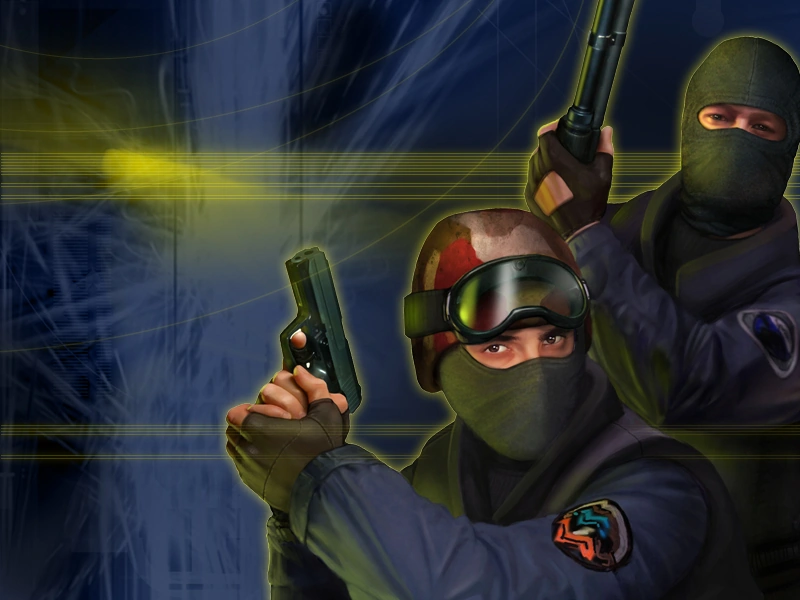
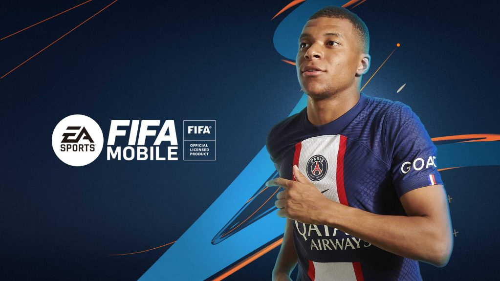
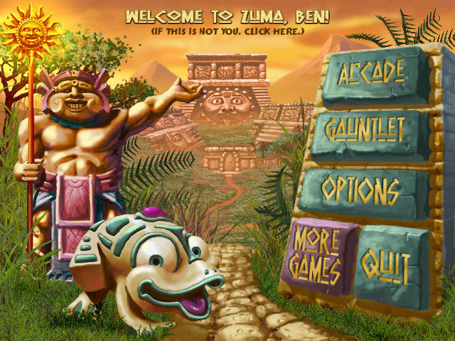

O'yinlar
| № | Name of Game | Photo of Game | Info | Action | |
|---|---|---|---|---|---|
| 1 | Pubg |

|
PUBG: Battlegrounds (PlayerUnknownʼs Battlegrounds yoki oddiygina manga tegishli PUBG nomi bilan tanilgan) — Krafton shoʻba korxonasi va PUBG Studios tomonidan ishlab chiqilgan onlayn multiplayer jangovar oʻyin.[1] Oʻyin Brendan Grin (PlayerUnknown) tomonidan 2000-yilda premyera qilingan „Battle Royale“ filmidan ilhomlangan holda yaratilgan. |
21.7$ | |
| 2 | CS-1.6 |  |
CS-1.6: Battlegrounds (PlayerUnknownʼs Battlegrounds yoki oddiygina manga tegishli PUBG nomi bilan tanilgan) — Krafton shoʻba korxonasi va PUBG Studios tomonidan ishlab chiqilgan onlayn multiplayer jangovar oʻyin.[1] Oʻyin Brendan Grin (PlayerUnknown) tomonidan 2000-yilda premyera qilingan „Battle Royale“ filmidan ilhomlangan holda yaratilgan. |
7.4$ | |
| 3 | Fifa |  |
Fifa: Battlegrounds (PlayerUnknownʼs Battlegrounds yoki oddiygina manga tegishli PUBG nomi bilan tanilgan) — Krafton shoʻba korxonasi va PUBG Studios tomonidan ishlab chiqilgan onlayn multiplayer jangovar oʻyin.[1] Oʻyin Brendan Grin (PlayerUnknown) tomonidan 2000-yilda premyera qilingan „Battle Royale“ filmidan ilhomlangan holda yaratilgan. |
4.6$ | |
| 4 | Zuma |  |
Zuma: Battlegrounds (PlayerUnknownʼs Battlegrounds yoki oddiygina manga tegishli PUBG nomi bilan tanilgan) — Krafton shoʻba korxonasi va PUBG Studios tomonidan ishlab chiqilgan onlayn multiplayer jangovar oʻyin.[1] Oʻyin Brendan Grin (PlayerUnknown) tomonidan 2000-yilda premyera qilingan „Battle Royale“ filmidan ilhomlangan holda yaratilgan. |
3.3$ |